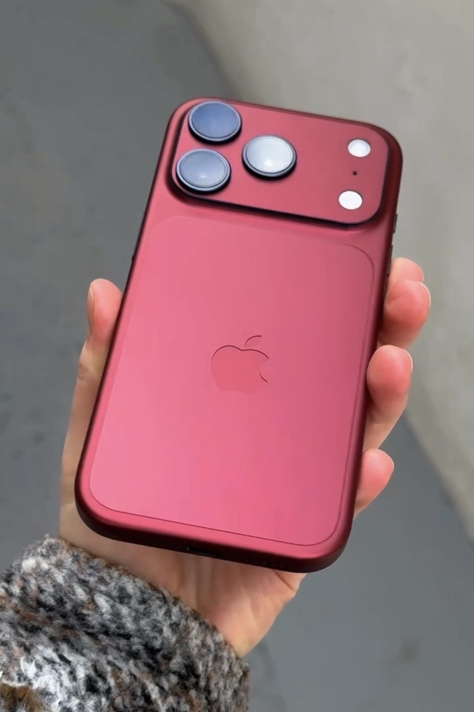
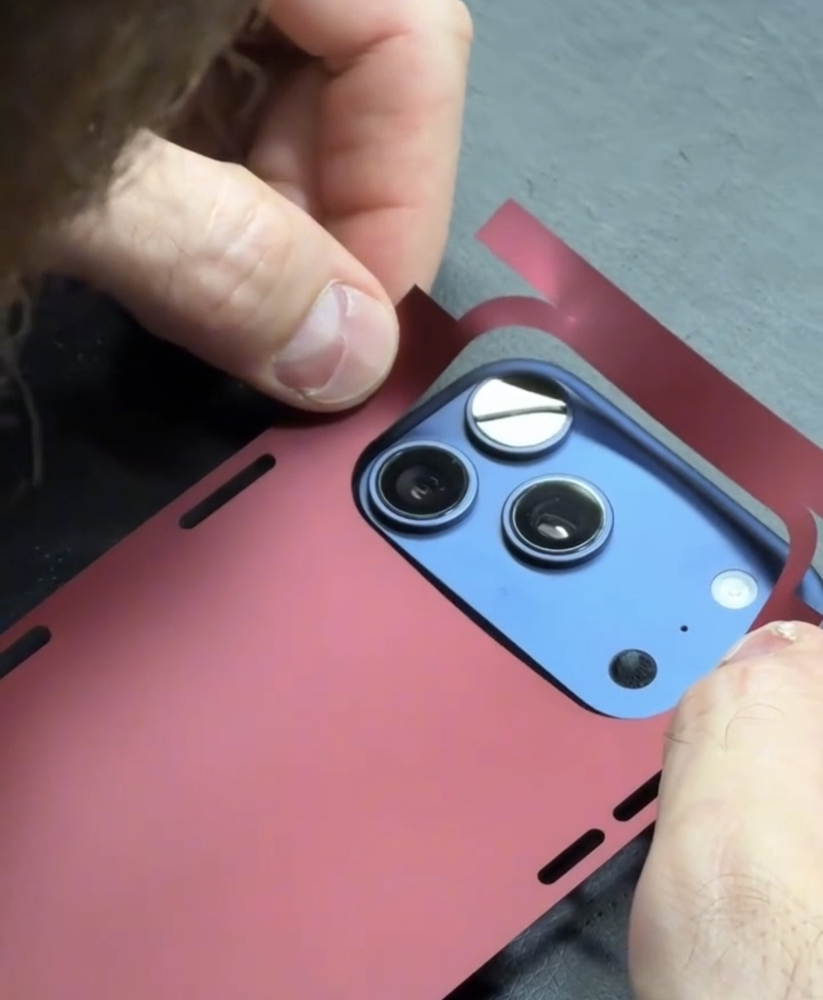
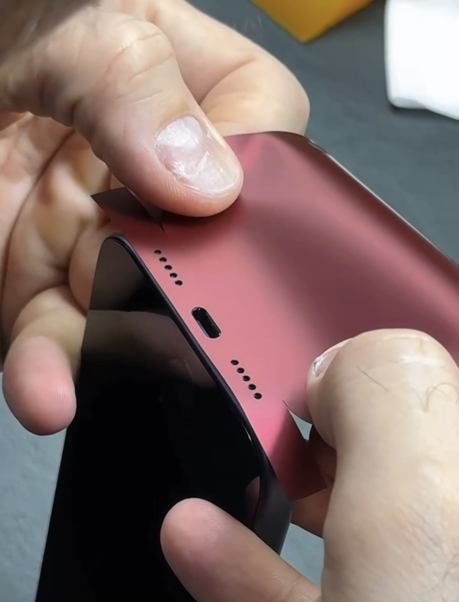
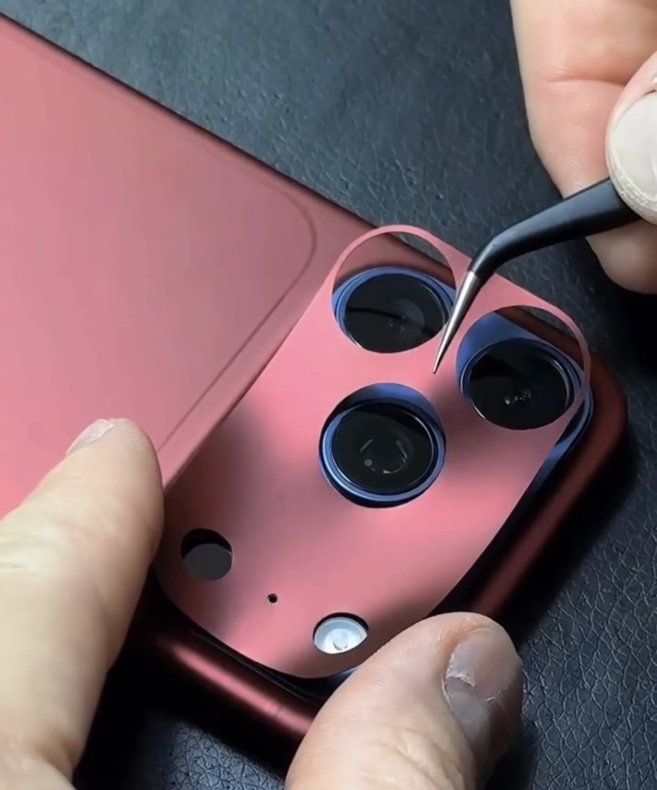
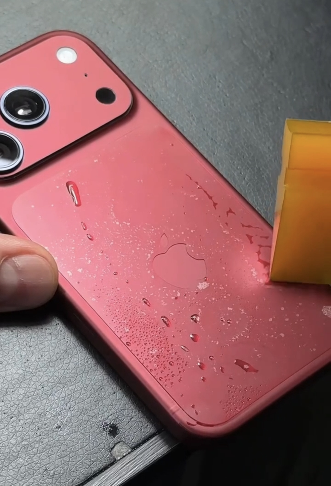
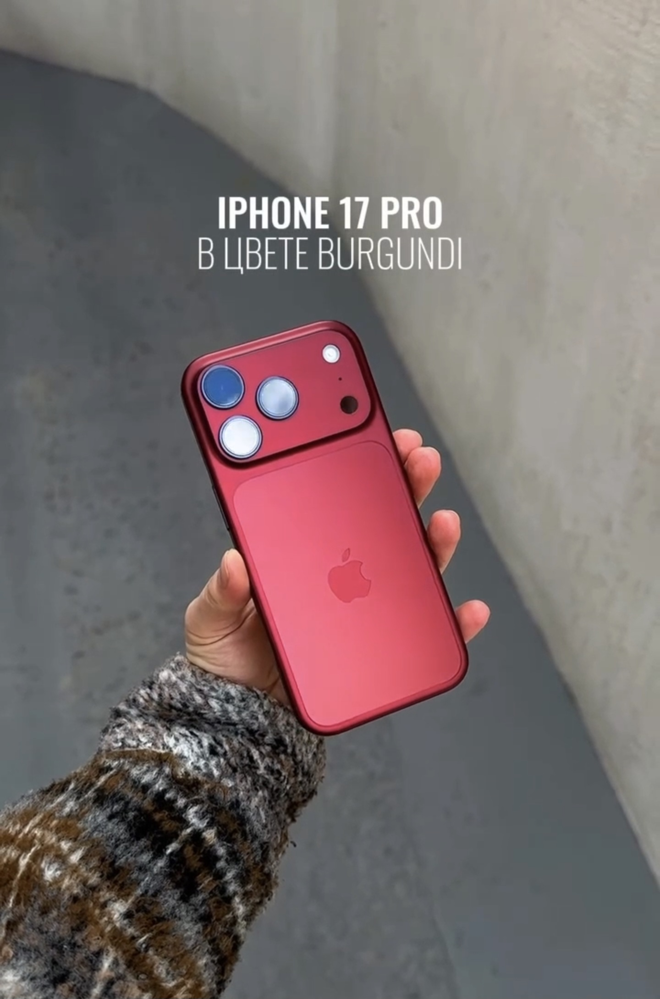

Под заказ · Оренбург
Бронеплёнка
Burgundy.
Для твоего iPhone.
Бронеплёнка в бордовом цвете Burgundy под заказ в Оренбурге.
Посмотрите результат и процесс оклейки на фотографиях ниже.
От 2 000 ₽ · Оклейка за 30–40 минут
Фотографии / Результат и процесс
Как выглядит Burgundy.
Как проходит оклейка.
Цветная плёнка меняет внешний вид корпуса iPhone. На фотографиях — готовый телефон, нанесение плёнки на корпус и работа с деталями вокруг камер и разъёмов.






О товаре
Бронеплёнка в цвете Burgundy для iPhone
Оклеиваем iPhone 17 Pro / Pro Max и iPhone 18 Pro / Pro Max премиальной бронеплёнкой в цвете Burgundy — глубоком бордовом оттенке.
- Защита от царапин и потёртостей
- Полная оклейка корпуса 360°
- Аккуратно, без пузырей и лишнего объёма
- Плёнку можно снять или заменить в любое время
Для клиентов из Оренбурга — скидка 25% на повторную замену бронеплёнки, если первая оклейка выполнена у нас. Скидка действует без ограничения срока, в том числе после длительного использования.
Стоимость оклейки — от 2 000 ₽. Выполнение оклейки занимает 30–40 минут. Плёнка доступна под заказ: срок её поступления уточняйте отдельно. Количество плёнок для предзаказа ограничено. Напишите на Авито или позвоните, чтобы согласовать заказ.
Написать на Авито ↗01 / Модели
Бронеплёнка Burgundy
для четырёх моделей iPhone
Укажите свою модель при обращении.
Плёнка доступна под заказ.
- iPhone 17 ProПод заказ ↗
- iPhone 17 Pro MaxПод заказ ↗
- iPhone 18 ProПод заказ ↗
- iPhone 18 Pro MaxПод заказ ↗
02 / Заказ
Заказать бронеплёнку
в Оренбурге
Откройте объявление
Перейдите на Авито по кнопке ниже.
Напишите модель iPhone
Укажите Pro или Pro Max и поколение телефона.
Согласуйте детали
Согласуйте цену от 2 000 ₽ и время визита. Оклейка занимает 30–40 минут.
Адрес и запись
Ждём вас в Оренбурге
ул. Новая, 4, ТРК «Гулливер», первый этаж.
Ежедневно с 10:00 до 21:00, без выходных.
Посещение по предварительной записи. Позвоните или напишите на Авито, чтобы согласовать удобное время.
Записаться: +7 (922) 899-65-9903 / Детали
Перед заказом
Для каких iPhone можно заказать плёнку?
Для iPhone 17 Pro, iPhone 17 Pro Max, iPhone 18 Pro и iPhone 18 Pro Max. Возможность изготовления для вашей модели и сроки подтвердите у продавца на Авито.
Сколько стоит бронеплёнка Burgundy?
Стоимость — от 2 000 ₽. Точную цену для вашей модели уточните на Авито или по телефону.
Как получить заказ в Оренбурге?
Посетите нас по предварительной записи: Оренбург, ул. Новая, 4, ТРК «Гулливер», первый этаж. Работаем ежедневно с 10:00 до 21:00. Запись по телефону +7 (922) 899-65-99 или на Авито.